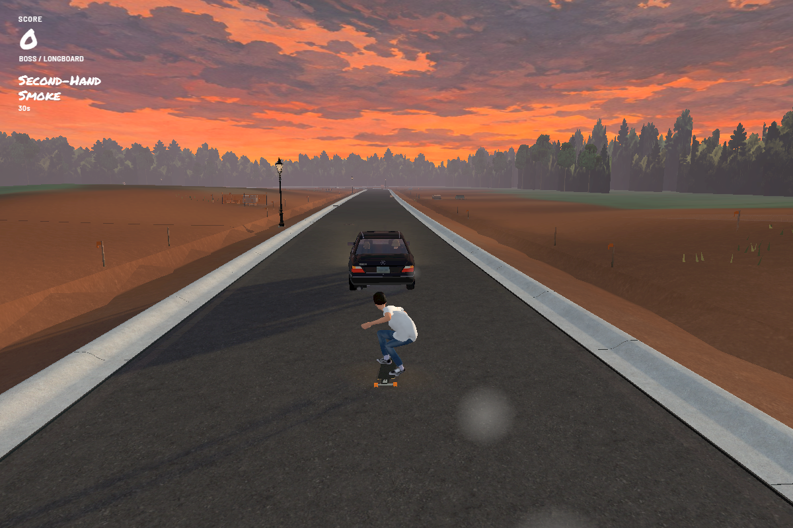
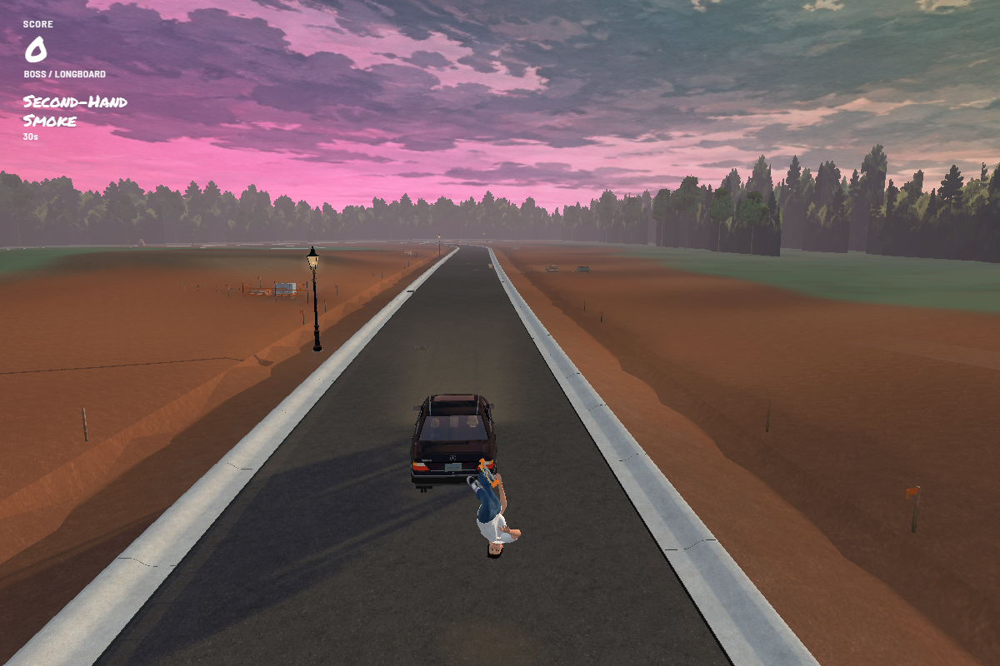
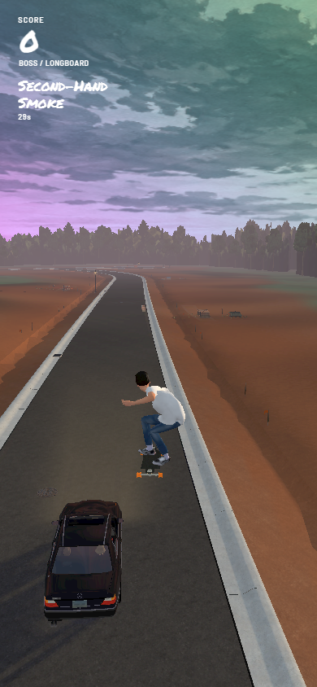

Build 165 · Second-Hand Smoke
Play Build 165 →
Choose Boss and follow Sprad's smoke trail. Collect three puffs to trigger the backflip and light-gravity ascent, with a gently pulsing rainbow sky for 30 seconds and a six-second fade afterward.
The same illustrated clouds
These views hold the camera and scene still to show the sky color change. The cloud artwork stays in place.

Boss takes off

Portrait
